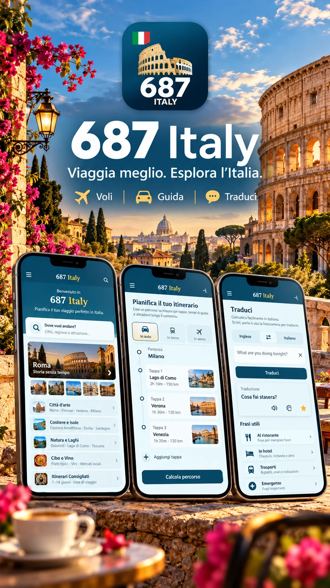

687 Italy is built for travelers who want more than a saved itinerary. It connects the plan with the real day: where you are, what is nearby, how much time you have, what the weather is doing and what needs your attention next.

A trip through Italy can move between cities, stations, walking routes, restaurants, museums, weather changes and last-minute decisions in a single day. 687 Italy keeps these parts connected so the app remains useful after the planning stage is over.
Create the itinerary, organize destinations and stops, keep your budget in view and prepare the practical parts of the trip before departure.
Nearby, translation and navigation help you move from discovery to action without leaving the rest of your trip context behind.
NOW, Intelligent Day, Prevent, Guardian and Signals help you understand what still makes sense when timing, weather or plans change.
An Italy trip often links airports, high-speed rail, regional trains, hotels, museum reservations and several cities. 687 Italy keeps these fixed pieces connected to the daily itinerary so Rome, Florence, Venice, Milan, Naples or smaller stops can belong to one understandable route.
Today, NOW, Budget, Prevent, Guardian, Signals and Rescue work together as the daily control layer for the trip.
Keep relevant travel changes and important context visible while you are moving between places.
Use weather and practical conditions in context, so rain, heat or reduced visibility can influence the plan before they become a problem.
Focus on realistic options that fit the current location, time and remaining day instead of restarting your research.
Discover restaurants, attractions and useful services around you and move directly toward the next action.
Track trip expenses and keep spending visible throughout the journey in the currency that makes sense for you.
Move from 687 to supported navigation services when you are ready to go, keeping travel planning and routing connected.
Practical language help sits beside the rest of the travel flow instead of living in another disconnected tool.
Important trip context stays easier to see when several things are happening at once.
Practical travel-help tools remain close when you need support quickly.
687 Italy is designed to stay useful from the moment you start planning until the moment you finish the trip. These are the main layers and how they work together.
687 Italy lets you structure the trip around the things that already have a time, place or cost. That gives the intelligent tools a realistic framework later, instead of treating every day as an empty list.
The daily layer is where 687 becomes more than a trip planner. It keeps the current itinerary visible, then helps you understand what still makes sense when time, location or conditions change.
When there is a gap between fixed commitments, 687 can look for places that fit the available window and protect the appointment already in your itinerary.
Nearby is designed for the moment when you know what you need but do not want to leave the rest of the trip context behind. It supports practical discovery across Italian cities, towns and road-trip stops.
687 keeps the budget visible while you travel so spending becomes part of the planning logic instead of something you calculate after the trip.
Prevent and Guardian are designed to connect changing conditions to the itinerary, so important information can reach you before it becomes a problem.
Signals are designed for real travel conditions: something happens, a traveler can report it, others can see the signal, and confirmations help make the information more useful.
687 keeps language and movement tools inside the same travel flow, so practical actions do not require you to rebuild the context in another app.
687 Italy is designed around short travel decisions: check the day, see what is nearby, understand conditions, choose the next action and continue moving. The interface keeps the main travel layers close instead of hiding them behind separate services.
687 Italy is available now on the App Store and Google Play.
687 Italy is designed to connect the major travel decisions before and during the trip — international flights, domestic connections, trains, accommodation, additional cities, priority bookings and car travel — with the itinerary you use every day.
Keep arrival and departure planning connected to the trip schedule instead of treating the main flight as a separate task.
Add internal air connections when they are useful and keep airport time and transfers visible inside the itinerary.
Plan transfers between cities and understand how transport time changes the realistic shape of the day.
Keep accommodation choices linked to the places, transport and timing around each part of the itinerary.
Put time-sensitive bookings, tours and entries at the center of the plan so other activities can fit around them.
Keep must-see places and priority experiences visible so the plan protects what matters most to you.
Extend the same trip to additional cities without losing the structure, budget and travel context already created.
Use driving when it makes sense and connect it with stops, Nearby, navigation and the rest of the travel plan.